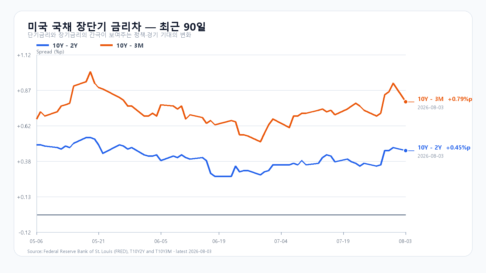
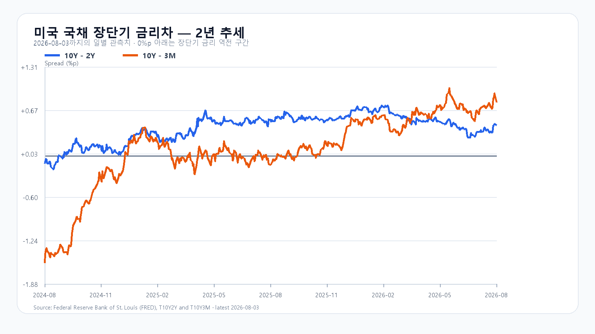

오늘의 한 문장
미국의 유가·금리 완화와 메모리 공급 부족 확인에도 국내 기관은 갭상승을 비중 축소 기회로 사용했습니다. 원화는 강하고 외국인은 현물을 샀지만 선물을 팔았으며, 자금은 초대형 반도체보다 KOSDAQ으로 빠르게 이동했습니다.
KOSPI는 전일보다 1.50% 높은 6,351.38로 출발해 6,389.40까지 올랐습니다. 이후 6,080.25까지 밀렸다가 보합권을 되찾았습니다. 같은 시간 삼성전자는 0.84%, SK하이닉스는 1.08% 내렸지만 KOSPI 상승 종목은 712개로 하락 172개를 크게 웃돌았습니다.
오늘 지수보다 먼저 볼 숫자는 외국인 선물과 기관 현물입니다. 두 수급이 바뀌어야 오전 저점 반등이 오후 추세로 이어집니다.
갭상승이 6,080 저점으로 바뀐 오전
10시 49분 KOSPI는 6,268.28로 0.17% 올랐습니다. 고점에서는 2.11% 상승했지만 저점에서는 2.83% 하락했습니다. KODEX 레버리지도 96,680원에서 86,650원까지 10% 넘게 왕복한 뒤 93,210원으로 돌아왔습니다.
| 항목 | 현재 | 시가 / 고가 / 저가 |
|---|---|---|
| KOSPI | 6,268.28 · +0.17% | 6,351.38 / 6,389.40 / 6,080.25 |
| 삼성전자 | 237,500원 · -0.84% | 239,000 / 246,500 / 227,500 |
| SK하이닉스 | 1,550,000원 · -1.08% | 1,580,000 / 1,630,000 / 1,483,000 |
| KODEX 레버리지 | 93,210원 · -0.49% | 96,090 / 96,680 / 86,650 |
외국인은 KOSPI 현물을 1,554억원 순매수했고 개인도 4,531억원을 샀습니다. 기관은 6,717억원을 팔았습니다. 금융투자 -2,920억원, 투신 -4,737억원이 매도의 중심이었고 연기금은 1,201억원을 순매수했습니다.
프로그램은 차익 -1,107억원, 비차익 +877억원, 전체 -230억원이었습니다. 비차익은 전날 대규모 매도에서 순매수로 돌아왔지만 오전 중 매수 규모가 줄었습니다. 외국인도 현물은 샀으나 10시 32분 기준 KOSPI200 선물은 572억원을 순매도했습니다. 저가매수와 지수 헤지가 함께 나타난 조합입니다.
코스닥 5%와 반도체 약세의 온도차
KOSDAQ은 775.77로 5.21% 올라 776.69 고점 가까이에 있었습니다. 상승 종목은 1,357개, 하락 종목은 292개였습니다. KOSPI도 상승 712개, 보합 31개, 하락 172개로 시장 폭은 강했습니다.
지수 대형주가 약한데 대부분 종목이 오른 것은 한국 자산 전체에서 돈이 빠지는 장과 다릅니다. 초대형 반도체와 KOSPI200에서 바이오·2차전지·중소형주로 자금이 이동하는 순환매가 지수 아래에서 진행됐습니다. 다만 이 매수가 단기 숏커버인지 장기 신규자금인지는 오전 수치만으로 구분하기 어렵습니다.
미국발 안도 랠리는 어디까지 왔나
AP가 집계한 8월 3일 미국장에서 S&P 500은 1.5%, Nasdaq은 2.1%, Dow는 1.3% 상승했습니다. Brent유는 4.7% 내린 배럴당 83.77달러로 마감했고 미국 10년물 시장금리는 4.75%에서 4.68%로 낮아졌습니다.
Micron은 장 초반 6.4% 하락했다가 장중 1.7% 상승으로 반전했지만 종가는 0.8% 상승에 그쳤습니다. 이 큰 왕복은 미국 기술주의 안도 랠리 안에서도 메모리 위험선호가 아직 불안정하다는 신호입니다. 오늘 한국 반도체가 갭상승을 지키지 못한 배경과도 맞닿아 있습니다.
실물 메모리는 계속 부족하다
TrendForce가 8월 3일 저녁 공개한 DRAM 현물가에서 DDR5 16Gb는 51.333달러로 0.72%, DDR4 16Gb는 85.707달러로 0.57% 올랐습니다. DDR4 8Gb는 보합, DDR3 4Gb는 0.20% 상승했습니다.
| 품목 | 평균가 | 당일 |
|---|---|---|
| DDR5 16Gb 4800/5600 | $51.333 | +0.72% |
| DDR4 16Gb 3200 | $85.707 | +0.57% |
| DDR4 8Gb 3200 | $42.112 | 보합 |
| DDR3 4Gb | $13.838 | +0.20% |
미국 7월 ISM 제조업 공식 보고서도 같은 방향을 확인했습니다. PMI는 55.6, 생산은 58.5, 신규주문은 56.7이었습니다. 부족 품목에는 메모리가 7개월, 전자부품이 17개월, 반도체가 5개월 연속 포함됐습니다.
가격지수 71.1은 공급 부족의 양면을 보여줍니다. 메모리 공급사의 가격 결정력과 이익에는 우호적이지만 제조업 물가와 장기금리에는 부담입니다. 현물가격과 ISM 공급 조사가 강세를 이어간 가운데, 오전 주가는 기관 비중 축소와 선물 헤지에 더 민감하게 반응했습니다.
물가·환율·국채의 완충력
한국 7월 소비자물가는 전월 대비 0.2% 하락하고 전년 대비 2.8% 상승해 6월의 3.2%보다 둔화했습니다. 식료품·에너지 제외지수는 전년 대비 2.6%였습니다. 달러/원은 오전 1,424원대로 원화가 약 0.4% 강했습니다.
미 재무부 8월 3일 확정치는 3개월물 3.91%, 2년물 4.25%, 10년물 4.70%였습니다. 10Y-2Y는 +0.45%포인트, 10Y-3M은 +0.79%포인트입니다.
원화와 장기금리가 안정됐는데도 KOSPI가 크게 왕복한 것은 외화유동성이나 한국 신용위험보다 주식시장 내부 수급이 우선했음을 보여줍니다. 이 완충재는 반등 환경을 만들었지만 기관 매도를 스스로 멈추게 하지는 못했습니다.


오늘 밤부터 확인할 일정
| 한국시간 | 일정 | 확인할 것 |
|---|---|---|
| 8/4 21:30 | 미국 6월 무역수지 | 달러와 성장 해석 |
| 8/4 23:00 | 미국 6월 JOLTS | 노동수요와 금리 |
| 8/5 23:00 | 미국 7월 ISM 서비스업 | 서비스 물가·고용 |
| 8/6 06:00 | AMD 2분기 실적 콜 | AI 가속기와 HBM 수요 |
| 8/6 08:00 | 한국 6월 국제수지 | 원화와 반도체 수출 |
| 8/7 21:30 | 미국 7월 고용보고서 | 이번 주 최대 금리 변수 |
오늘 밤 JOLTS는 구인이 완만하게 줄면서 경기 급락을 피하는 결과가 가장 편합니다. 한국 메모리주에 더 직접적인 일정은 AMD 실적입니다. AI 가속기 주문뿐 아니라 시스템 출하 시기와 HBM 탑재 확대를 확인해야 합니다.
오후 시나리오와 기준선
강한 시장 폭과 외국인 현물 매수가 6,080 저점을 받치지만 기관 매도와 반도체 약세가 상단을 제한합니다.
외국인 선물이 순매수로 전환하고 비차익 매수가 확대돼야 합니다. 6,330을 회복하지 못하면 무효입니다.
6,080이 깨지고 비차익이 순매도로 돌아서면 열립니다. 달러/원 1,435원 상향도 경계 신호입니다.
KODEX 레버리지의 오전 저점은 86,650원, 전일 종가는 93,670원, 흐름 복원 기준은 오늘 시가 96,090원입니다. 외국인 선물 순매수 전환, 기관 매도 둔화, 비차익 매수 확대 중 적어도 두 가지가 확인돼야 공격 점수를 높일 수 있습니다.
오늘 판단은 공격 30, 관망 55, 방어 15입니다. 오전 회복은 의미가 있지만 대형 반도체와 선물 수급은 아직 반등을 확인하지 않았습니다.
자료 기준
한국 시세와 수급은 Naver Finance가 제공한 8월 4일 오전 10:49~10:51 KST 장중값, 미국 시장은 AP의 8월 3일 정규장 마감 보도, 메모리 현물가는 TrendForce, 공급 부족은 ISM 공식 보고서, 물가는 국가데이터처, 국채는 미 재무부와 FRED를 사용했습니다. 상세 수치와 조건부 전망은 오전 리서치 보고서에 정리했습니다.